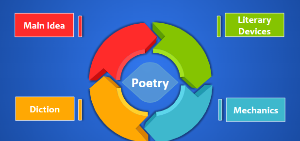

Why do we need to analyze poetry?
To learn how to analyze poetry, we will read Emily Dickinson’s “Tell all the truth but tell it slant,” first and then identify the following components:

Read: https://www.poetryfoundation.org/poems/56824/tell-all-the-truth-but-tell-it-slant-1263
Poetry analysis starts by giving a brief “plot summary” of the poem. This means to explain in general terms the main idea of the poem.
The main idea should be stated in sentence form. Additionally, you should respond to the main idea of the poem.
Main IdeaThe poem, “Tell All the truth but tell it slant,” by Emily Dickinson, talks about how we should not be upfront in saying things because some people can’t handle the truth. ResponseI agree with Emily Dickinson’s stance, because sometimes we need to approach people with compassion, otherwise, we cannot get our message across. DictionThe next step is to discuss the diction of the poem and its effectiveness in contributing to the main idea of the poem.
Literary DevicesLastly, analyze the figurative meaning in the poem. Identify relevant figurative devices (or the absence of them).
MechanicsWe then discuss the mechanics of the poem: use of rhyme and rhythm, sound devices, line length, etc.
|
The Complete Analysis
Accordion
The poem, Tell all the truth but tell it slant, by Emily Dickinson, talks about how we should not be upfront in saying things because some people can’t handle the truth. I agree with Emily Dickinson’s stance, because sometimes we need to approach people with compassion, otherwise, we cannot get our message across.
Dickinson’s poem is short, but meaningful. Not all the lines rhyme and I think that was done on purpose. In a way, it also applies the main idea of the poem: by presenting the main idea in a creative way but piercing the reader in the end.
The personification of the truth and how it is compared to lightning shows how quick the truth should be said. Ultimately, the main idea which is, “to tell the truth, but tell it slant” resonates through its last line as well. With these strategies, I believe the author was able to communicate the main point of telling the truth compassionately.